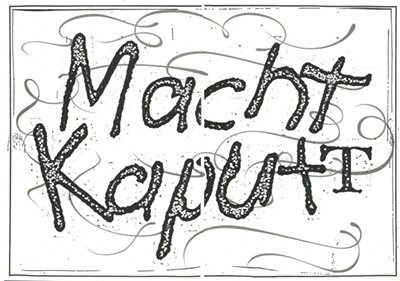

This month’s reading:
“The Gender of Sound” by Anne Carson.
Additional texts in the reader: “Cry, Scream, Shout, Sing” from “Lexicon of the Mouth” by Brandon LaBelle, “When Our Lips Speak Together” by Luce Irigaray, “The Laugh of the Medusa” by Hélène Cixous, “A Phenomenology of Voice” from “Listening and Voice: Phenomenologies of Sound” by Don Ihde, “The Sounds of Feminist Theory” by Ruth Salvaggio, “Deep Listening” from “Deep Listening: A Composer’s Sound Practice” by Pauline Oliveros
This month, we followed the Sonic Meditation “Sex Change / Ear Ly” until the sound of the sirens went off.
Sonic Meditation1 meetings are inspired by Pauline Oliveros, who introduced them as non-verbal group work, as a way of attuning2 yourself to others, through one's own voice as well as exercising to listen to each other without the pressure of daily speech, often being marked by gendered parameters.
SEX CHANGE
LISTEN INWARDLY TO THE SOUND OF YOUR VOICE. LISTEN INWARDLY TO THE SOUND OF YOUR VOICE CHANGED TO ANOTHER SEX. LISTEN INWARDLY TO THE SOUND OF BOTH OR MULTIPLE VOICES TOGETHER. LISTEN INWARDLY AS IF THERE WERE MANY OF YOU. LISTEN INWARDLY FREELY AS YOUR VOICES CHANGE RANDOMLY. EXPRESS YOUR VOICES ALOUD.
EAR LY
LIE FLAT ON YOUR BACK OR SIT COMFORTABLY. OPEN YOUR EYES WIDELY, THEN LET YOUR EYELIDS CLOSE EXTREMELY SLOWLY. BECOME AWARE OF HOW YOUR EYELIDS ARE CLOSING. WHEN YOUR EYELIDS ORE CLOSED, TURN YOUR EYES SLOWLY FROM LEFT TO RIGHT, AROUND, UP AND DOWN. LET YOUR EYES REST COMFORTABLY IN THEIR SOCKETS. TRY TO BE AWARE OF THE MUSCLES BEHIND THE EYES AND OF THE DISTANCE FROM THESE MUSCLES TO THE BACK OF THE HEAD. COVER YOUR EYES WITH YOUR PALMS AND SHUT OUT ALL THE LIGHT. BECOME AWARE OF ALL THE SOUNDS IN THE ENVIRONMENT. WHEN YOU THINK YOU HOVE ESTABLISHED CONTACT WITH ALL OF THE SOUNDS IN THE EXTERNAL ENVIRONMENT, VERY GRADUALLY, INTRODUCE YOUR FINGERS INTO YOUR EARS OR COVER THEM WITH YOUR PALMS. TRY TO SHUT OUT ALL EXTERNAL SOUND. LISTEN CAREFULLY TO THE INTERNAL SOUNDS OF YOUR OWN BODY WORKING. AFTER A LONG TIME GRADUALLY OPEN YOUR EARS AND EMPHAZISE THE SOUNDS OF THE EXTERNAL ENVIRONMENT WITH YOUR VOICE.
- meditation, supplied with a carpet by Nicha Keeratiphanthawong and Tabea Nixdorff.
- attuning to the room.
Straw Phonation and Collective Gargle, exercises led by the WTFPC, followed by a Silent Lunch. This month’s WTFPC supper, along with other WTFPC activities, can be tracked here.
“Reflections on her voice” shares a selection of images, engraved into mirrors1, chosen while looking at the presence of female voices in early Japanese theatre. Actresses were forbidden from the stage; all roles were played by men. Thus, femininity being marked by makeup, wigs, costumes and gestures. Visual representation compensated the absence of her voice. The mirrors host a reflection2 of her voice into current space (music by Koppi Mizrahi).
- mirrors, engraved.
- reflections, performed with torch.
- representation
“Macht Kaputt”
“An Phantom Voices” closes out each of its monthly sessions with “Intermezzo,” a platform for spontaneous collective listening, to close the week, yet also already point to the next one: Intermezzo, as in between two sonic entities.
“Macht Kaputt”1 is a sonic contribution by Marcus Wachter.
- poster template by Egle Petraskaite and Gerardo Madera, enacted by Marcus Wachter, installed in the WT basement.